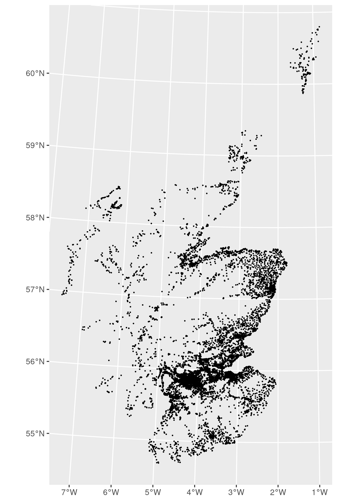
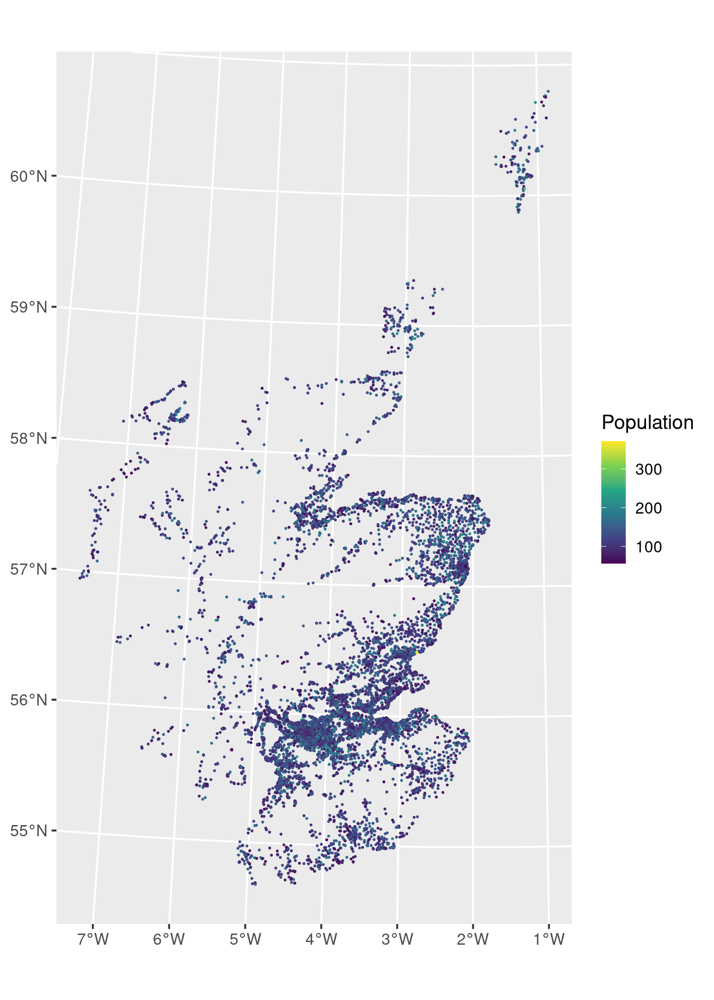
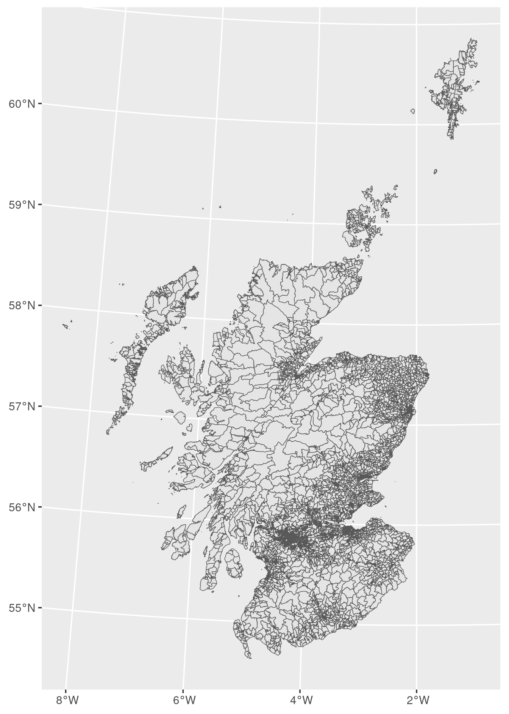
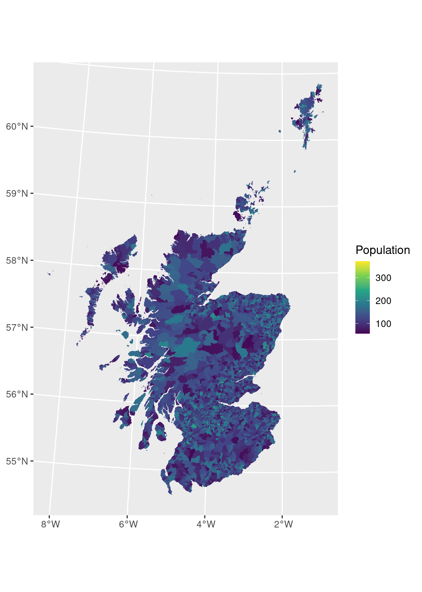
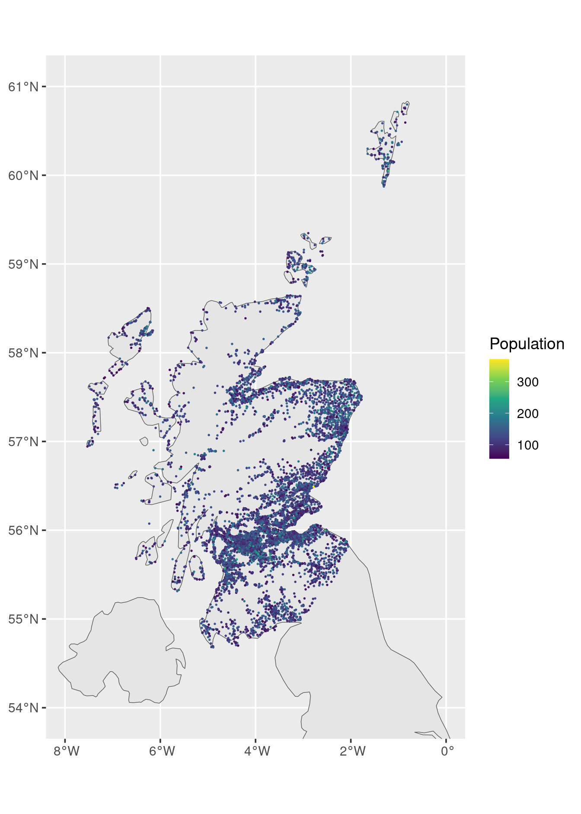
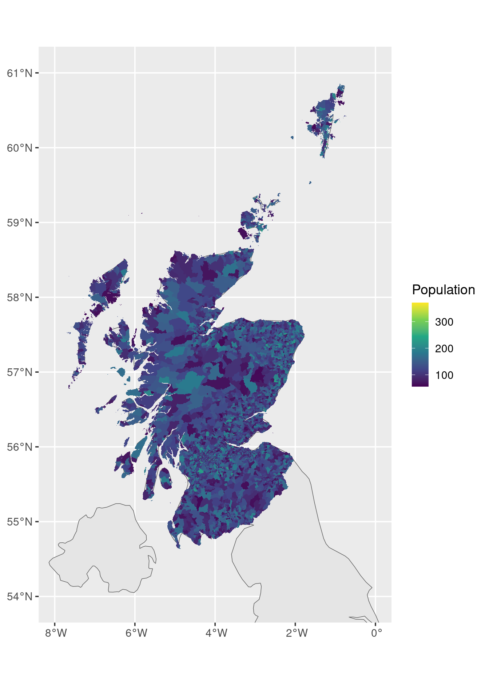
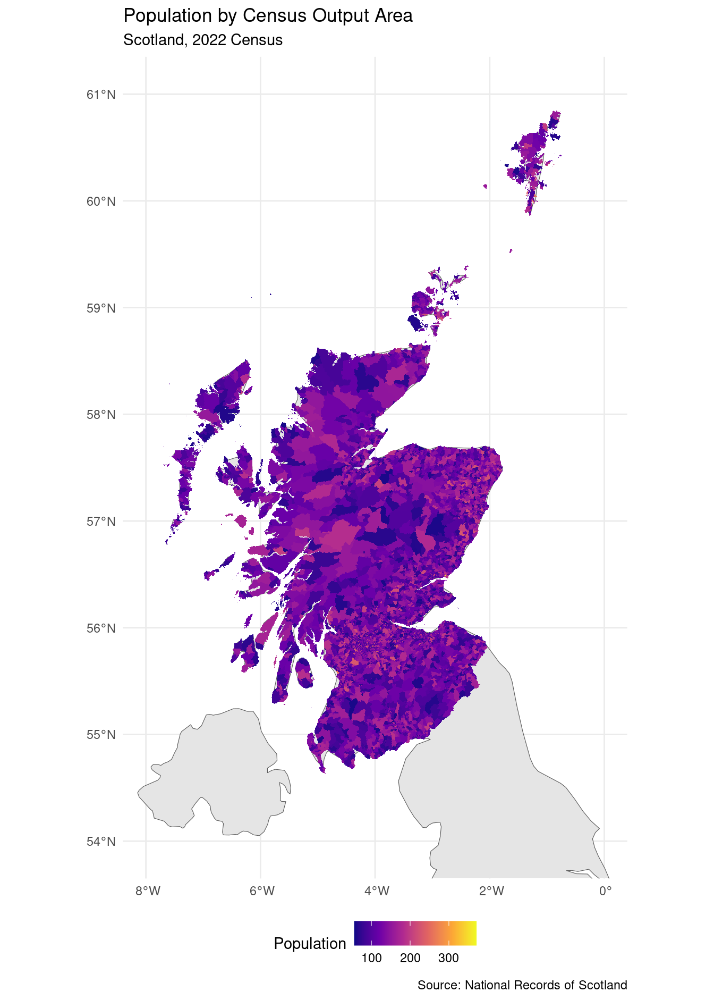

9 Plotting (geo)spatial data
9.1 Introduction
Geographic Information Systems (GIS) are a cornerstone of modern data analysis across many disciplines. Geospatial engineers use GIS to plan infrastructure, geographers use it to study human and physical landscapes, and archaeologists use it to map excavation sites and analyse spatial patterns in artefacts. Many universities offer dedicated modules on GIS, and you may encounter such courses in Geography, Environmental Science, or Engineering programmes.
As data scientists, we should not lag behind these specialists. The good news
is that the grammar of graphics aligns remarkably well with how GIS works.
Just as we build statistical graphics layer by layer in ggplot2, GIS
practitioners build maps by layering geographic features on top of one another.
This conceptual alignment means that once you understand ggplot2, working
with spatial data is a natural extension rather than a completely new skill.
In this chapter, we focus on creating static maps using ggplot2. In Chapter
10, we will explore interactive versions that allow users
to zoom, pan, and click on map features.
9.2 Why not just use geom_point()?
If you have a dataset with coordinates — say, longitude and latitude, or
easting and northing — you might think: “Can’t I just use geom_point() with
aes(x = longitude, y = latitude)?” The answer is: yes, but only for simple
cases.
# This works for a single dataset
ggplot(my_data, aes(x = longitude, y = latitude)) +
geom_point()However, this approach breaks down when you want to:
- Overlay multiple datasets that use different coordinate systems (e.g., one uses longitude/latitude, another uses British National Grid easting/northing)
- Add a background map from a different source
- Ensure geographic accuracy across different regions of the world
The problem is that geom_point() treats coordinates as simple numbers on
Cartesian axes. It has no understanding that these numbers represent locations
on Earth, or that different coordinate systems exist.
9.2.1 The sf solution
The sf package solves this by attaching coordinate reference system (CRS)
metadata to your data. When you use geom_sf() instead of geom_point(),
ggplot2 knows:
- What coordinate system each dataset uses
- How to transform coordinates between systems
This means that the same point on Earth will appear in the same position on your plot, even if different datasets represent that point using different coordinate systems. You can layer a dataset in longitude/latitude on top of a map in British National Grid, and they will align correctly.
# Two datasets with different coordinate systems
# will still align correctly when using geom_sf()
ggplot() +
geom_sf(data = uk_map) + # In WGS84 (longitude/latitude)
geom_sf(data = scottish_data) # In British National Grid (easting/northing)We will look at how the above code works in practice in Section 9.4, and detailed explanations of CRS in Section 9.5.
Without sf, you would need to manually convert all coordinates to a common
system before plotting — a tedious and error-prone process.
9.2.2 How geom_sf() differs from other geoms
Another key difference between geom_sf() and other geoms is that you do not
need to specify x and y aesthetics. With most geoms, you must tell
ggplot2 which variables map to the x- and y-axes:
# Regular geoms require x and y aesthetics
ggplot(data, aes(x = variable1, y = variable2)) +
geom_point()With geom_sf(), the geometry column already contains all the positional
information. The geom simply plots whatever geometry is in the data:
- If your data has
POINTgeometry, points are plotted - If your data has
POLYGONorMULTIPOLYGONgeometry, filled polygons are plotted - If your data has
LINESTRINGgeometry, lines are plotted
# geom_sf() reads position from the geometry column automatically
ggplot(spatial_data) +
geom_sf() # No aes(x = ..., y = ...) needed!All other aesthetic mappings work the same as with regular geoms. You can still
map variables to colour, fill, size, alpha, linetype, and so on:
# Other aesthetics work as usual
ggplot(spatial_data) +
geom_sf(aes(fill = population, colour = region), size = 0.5)This automatic handling of geometry makes geom_sf() both simpler (no need to
specify x/y) and more powerful (works with any geometry type) than using
geom_point(), geom_polygon(), or geom_path() manually.
9.3 The key ingredient: geometry
The main principle of working with spatial data remains the same as with any other data: we read in a file or load a dataset from a package, then visualise it. The crucial difference is that spatial data requires geometry — a special type of data that describes the shape and location of geographic features.
9.3.1 Simple feature collections
If a dataset already has geometry information in the correct format, it is called a simple feature collection. This is essentially a tidy data frame with an additional geometry column. The geometry column contains the spatial information (points, lines, or polygons) for each observation.
# A simple feature collection looks like this:
# Simple feature collection with 100 features and 3 fields
# Geometry type: POINT
# Bounding box: xmin: -5.7 ymin: 50.0 xmax: 1.8 ymax: 58.6
# CRS: EPSG:4326
# # A tibble: 100 x 4
# name population area_km2 geometry
# <chr> <dbl> <dbl> <POINT [°]>
# 1 Location A 1234 12.5 (-2.345 54.123)
# 2 Location B 5678 34.2 (-1.567 55.456)
# ...9.3.2 File formats for spatial data
The file format determines what kind of geometry information is available:
Flat files (CSV, XLS, XLSX):
- Easy to read using
read_csv()orread_excel() - Most likely contain point geometry only (e.g., latitude and longitude in separate columns)
- The geometry is not in a readily available format, so we need to manipulate the data before plotting (see Section 9.5.3)
Shapefiles (.shp):
- The traditional GIS file format
- Can contain point, line, or polygon geometry
- A “shapefile” is actually a collection of files with the same name but different extensions (.shp, .shx, .dbf, .prj, etc.)
- Tend to be larger in size than flat files
- Geometry is already in the correct format
9.3.3 Reading shapefiles
We use read_sf() from the sf package to read shapefiles. You only need to
point to the .shp file, but do not delete the companion files that come
with it (e.g., .shx, .dbf, .prj): they contain essential metadata such
as the coordinate reference system information.
library(sf)
# Read a shapefile (point to the .shp file; keep the companion files!)
spatial_data <- read_sf("path/to/file.shp")st_read() achieves the same result; read_sf() is a convenient wrapper that
returns a tibble and suppresses messages by default.
9.4 Example: Scottish Census output areas
To illustrate spatial visualisation, we use data from the 2022 Scottish Census.
The National Records of Scotland provides geographic data for census output
areas at https://www.nrscotland.gov.uk/publications/2022-census-geography-products/.
Download the zip file that says “… Population Weighted Centroids” and decompress / extract the files to your working directory. These files should be in a folder OutputArea2022_PWC/ and all with the same name but different file extensions.
9.4.1 Point data: population-weighted centroids
Let’s start by reading the population-weighted centroids (PWC) shapefile. Each output area is represented by a single point — the population-weighted centre of that area.
pwc <-
read_sf("OutputArea2022_PWC/OutputArea2022_PWC.shp")
head(pwc)## Simple feature collection with 6 features and 7 fields
## Geometry type: POINT
## Dimension: XY
## Bounding box: xmin: 392813 ymin: 805762 xmax: 394238 ymax: 806594
## Projected CRS: OSGB36 / British National Grid
## # A tibble: 6 × 8
## code HHcount Popcount council masterpc easting northing
## <chr> <dbl> <dbl> <chr> <chr> <chr> <chr>
## 1 S00136… 61 64 S12000… AB10 1BT 393865 806312
## 2 S00136… 64 68 S12000… AB10 1DA 393877 806296
## 3 S00136… 62 105 S12000… AB10 1DB 392813 805762
## 4 S00136… 49 87 S12000… AB10 1DH 393708 806213
## 5 S00136… 47 75 S12000… AB10 1FL 394238 806594
## 6 S00136… 49 64 S12000… AB10 1HE 394157 806265
## # ℹ 1 more variable: geometry <POINT [m]>Notice that pwc is a simple feature collection with a geometry column
containing POINT data. The dataset includes HHcount (household count) and Popcount (population
count) for each output area.
9.4.2 First attempt: plotting points
The simplest call just plots the points as they are:
ggplot(pwc) +
geom_sf(size = 0.3)
Figure 9.1: Scottish census output areas as points.
This already gives a recognisable shape of Scotland. We can also colour the points by population count:
ggplot(pwc) +
geom_sf(aes(colour = Popcount), size = 0.3) +
scale_colour_viridis_c() +
labs(colour = "Population")
Figure 9.2: Scottish census output areas as points, coloured by population count.
This gives us a recognisable shape of Scotland, but there are two problems:
- We want polygons, not points: The dots are hard to see and don’t show the actual boundaries of output areas
- No background map: We have no geographic context — no coastline, no country outline
Let’s fix these issues.
9.4.3 Fix (a): Using polygon data
For filled areas instead of points, we need the Extent of the Realm (EoR)
shapefile, which contains polygon geometry. From the same data source, download the zip file that says “… – Extent of the Realm” and extract the files to the working directory. These files should be in a folder OutputArea2022_EoR/ and all with the same name but different file extensions.
eor <-
read_sf("OutputArea2022_EoR/OutputArea2022_EoR.shp")
head(eor)## Simple feature collection with 6 features and 11 fields
## Geometry type: MULTIPOLYGON
## Dimension: XY
## Bounding box: xmin: 382978.4 ymin: 809487 xmax: 396528 ymax: 816096.1
## Projected CRS: OSGB36 / British National Grid
## # A tibble: 6 × 12
## code HHcount Popcount council sqkm hect masterpc
## <chr> <dbl> <dbl> <chr> <dbl> <dbl> <chr>
## 1 S00135307 62 144 S12000… 10.9 1095. AB21 0EQ
## 2 S00135308 33 65 S12000… 5.41 541 AB21 0T…
## 3 S00135309 71 143 S12000… 10.2 1016. AB23 8NT
## 4 S00135310 65 145 S12000… 0.774 77.4 AB21 7ER
## 5 S00135311 64 151 S12000… 7.81 781. AB22 8AR
## 6 S00135312 64 187 S12000… 0.0820 8.2 AB21 7GJ
## # ℹ 5 more variables: easting <chr>, northing <chr>,
## # Shape_Leng <dbl>, Shape_Area <dbl>,
## # geometry <MULTIPOLYGON [m]>Now we have polygons! The simplest call shows just the boundaries of each output area:
ggplot(eor) +
geom_sf()
Figure 9.3: Scottish census output areas as polygons (boundaries only).
To show population density, we fill by Popcount:
ggplot(eor, aes(fill = Popcount)) +
geom_sf(colour = NA) +
scale_fill_viridis_c() +
labs(fill = "Population")
Figure 9.4: Scottish census output areas as polygons, coloured by population count.
Note the key differences:
- We use
fill(notcolour) to fill the polygon interiors - We set
colour = NAto remove polygon borders (they would clutter the map at this scale)
9.4.4 Fix (b): Adding a background map
To provide geographic context, we can add a map of the United Kingdom using
the rnaturalearth package:
library(rnaturalearth)
# Get UK country outline
uk <- ne_countries(scale = "medium", country = "United Kingdom",
returnclass = "sf")
# Check what we have
class(uk)## [1] "sf" "data.frame"Now let’s create a map with the UK outline as a background, then add our census points on top:
ggplot() +
geom_sf(data = uk) +
geom_sf(data = pwc, aes(colour = Popcount), size = 0.3) +
scale_colour_viridis_c() +
coord_sf(xlim = c(-8, 0), ylim = c(54, 61), crs = 4326) +
labs(colour = "Population")
Figure 9.5: Scottish census output areas with UK background map.
Much better! We can now see Scotland in its geographic context. The
coord_sf() function allows us to zoom into the region of interest by setting
xlim and ylim. The crs argument specifies which coordinate reference
system those limit values are expressed in; see Section 9.5. It is always a good idea to set it
explicitly: when a map combines layers that use different CRS (as ours does —
the UK outline is in WGS84 while the census data is in British National Grid),
ggplot2 needs to know which system your xlim/ylim values refer to.
Using crs = 4326 (WGS84 longitude/latitude) is the safest default because
longitude and latitude are universally understood and work regardless of which
CRS the underlying data layers use.
9.4.5 Combining: polygons with background
For the complete picture, let’s use polygons with the background map:
ggplot() +
geom_sf(data = uk) +
geom_sf(data = eor, aes(fill = Popcount), colour = NA) +
scale_fill_viridis_c() +
coord_sf(xlim = c(-8, 0), ylim = c(54, 61), crs = 4326) +
labs(fill = "Population")
Figure 9.6: Scottish census output areas (polygons) with UK background map.
9.5 Coordinate reference systems
An important concept in spatial data is the coordinate reference system (CRS). Different datasets may use different systems to represent locations on Earth.
9.5.1 Common coordinate systems
WGS84 (EPSG:4326):
- The most common global system
- Uses longitude and latitude in degrees
- What you see on Google Maps
British National Grid (EPSG:27700):
- Used for Great Britain
- Uses easting and northing in metres
- What you see on Ordnance Survey maps
Pay attention to the number after “EPSG:”; this is the number you use when there is a crs parameter in the function, such as coord_sf() above in Section 9.4.4 and st_as_sf() below.
9.5.2 How the sf package handles CRS
The sf package handles coordinate system translations automatically. This
means:
- Points represented in different systems will be plotted correctly on the same map
- Datasets with different CRS can be layered on top of each other
Let’s check the CRS of our datasets:
# Check CRS of the census data
st_crs(pwc)$input## [1] "OSGB36 / British National Grid"# Check CRS of the UK map
st_crs(uk)$input## [1] "WGS 84"Even though these use different coordinate systems, ggplot2 with geom_sf()
handles the transformation automatically.
9.5.3 Creating geometry from coordinates
The point data in OutputArea2022_PWC is particularly useful for learning
data manipulation because it contains both:
- The
geometrycolumn (ready-to-use spatial data) - Separate coordinate columns (
easting,northing)
This allows us to practise converting coordinate columns into geometry. If you
have a CSV file with latitude and longitude columns but no geometry, you can
create the geometry using st_as_sf():
# First, let's see the coordinate columns in our data
pwc |>
st_drop_geometry() |>
select(code, easting, northing) |>
head()## # A tibble: 6 × 3
## code easting northing
## <chr> <chr> <chr>
## 1 S00136472 393865 806312
## 2 S00136478 393877 806296
## 3 S00136558 392813 805762
## 4 S00136477 393708 806213
## 5 S00136331 394238 806594
## 6 S00136454 394157 806265# If we only had coordinates (no geometry), we could create it like this:
pwc_coords <- pwc |>
st_drop_geometry() |>
select(code, easting, northing, HHcount, Popcount)
# Convert to sf object using the coordinate columns
pwc_recreated <- st_as_sf(pwc_coords,
coords = c("easting", "northing"),
crs = 27700) # British National Grid
# Verify it worked
class(pwc_recreated)## [1] "sf" "tbl_df" "tbl" "data.frame"head(pwc_recreated)## Simple feature collection with 6 features and 3 fields
## Geometry type: POINT
## Dimension: XY
## Bounding box: xmin: 392813 ymin: 805762 xmax: 394238 ymax: 806594
## Projected CRS: OSGB36 / British National Grid
## # A tibble: 6 × 4
## code HHcount Popcount geometry
## <chr> <dbl> <dbl> <POINT [m]>
## 1 S00136472 61 64 (393865 806312)
## 2 S00136478 64 68 (393877 806296)
## 3 S00136558 62 105 (392813 805762)
## 4 S00136477 49 87 (393708 806213)
## 5 S00136331 47 75 (394238 806594)
## 6 S00136454 49 64 (394157 806265)The coords argument specifies which columns contain the x and y coordinates,
and crs specifies the coordinate reference system those coordinates use.
Important: The coords argument expects the \(x\)-coordinate first, then the
\(y\)-coordinate. For geographic coordinates:
- Longitude is the \(x\)-axis (east-west position), so it comes first
- Latitude is the \(y\)-axis (north-south position), so it comes second
This order might feel counterintuitive if you’re used to saying “latitude and longitude”, but remember: longitude measures position along the horizontal (east-west) direction, just like the \(x\)-axis.
# Correct: longitude (x) first, then latitude (y)
st_as_sf(data, coords = c("longitude", "latitude"), crs = 4326)
# Correct: easting (x) first, then northing (y)
st_as_sf(data, coords = c("easting", "northing"), crs = 27700)
# WRONG: latitude first would place points in the wrong locations!
# st_as_sf(data, coords = c("latitude", "longitude"), crs = 4326)If your points appear in unexpected locations (e.g., in the ocean instead of on land), the first thing to check is whether you have the coordinate order correct.
9.6 Polishing spatial plots
Everything you learned in Chapters 4, 5, and 6 about colours, legends, and axes applies directly to spatial plots:
ggplot() +
geom_sf(data = uk) +
geom_sf(data = eor, aes(fill = Popcount), colour = NA) +
scale_fill_viridis_c(option = "plasma") +
coord_sf(xlim = c(-8, 0), ylim = c(54, 61), crs = 4326) +
labs(
title = "Population by Census Output Area",
subtitle = "Scotland, 2022 Census",
fill = "Population",
caption = "Source: National Records of Scotland"
) +
theme_minimal() +
theme(legend.position = "bottom")
Figure 9.7: Polished map of Scottish census output areas.
9.7 Summary
9.7.1 Packages needed
sf: Reading, manipulating, and writing spatial datarnaturalearth: Downloading country and region outlines for background maps
9.7.2 Data requirements
Spatial data must be a simple feature collection: a tidy data frame plus a geometry column.
| Source | Geometry types | Ease of use |
|---|---|---|
| Flat files (CSV, XLS, XLSX) | Points only (coordinates in columns) | Easy to read, but requires st_as_sf() |
| Shapefiles (.shp) | Points, lines, and/or polygons | Geometry ready, but larger file size |
9.7.3 Coordinate reference systems
- Different datasets may use different CRS (e.g., WGS84 vs British National Grid)
- The
sfpackage handles transformations automatically - Datasets with different CRS can be plotted together seamlessly
9.7.4 The spatial geom
geom_sf()is the key function for plotting spatial data- Use
colourfor points and lines - Use
fillfor polygon interiors - Layer multiple
geom_sf()calls to build up your map - Use
coord_sf(xlim, ylim, crs = 4326)to zoom to a region of interest; always specifycrs = 4326so the limits are interpreted as longitude and latitude, which is unambiguous regardless of the CRS used by the data layers